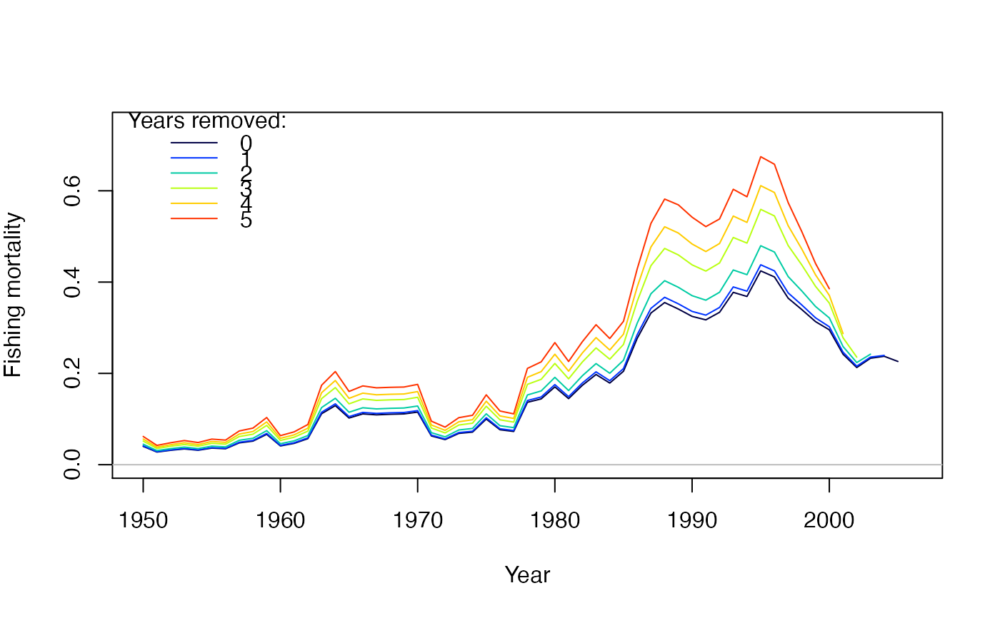
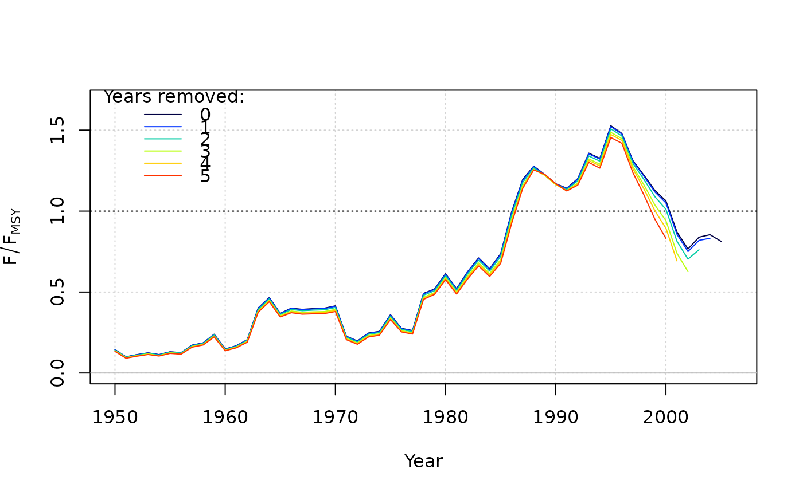
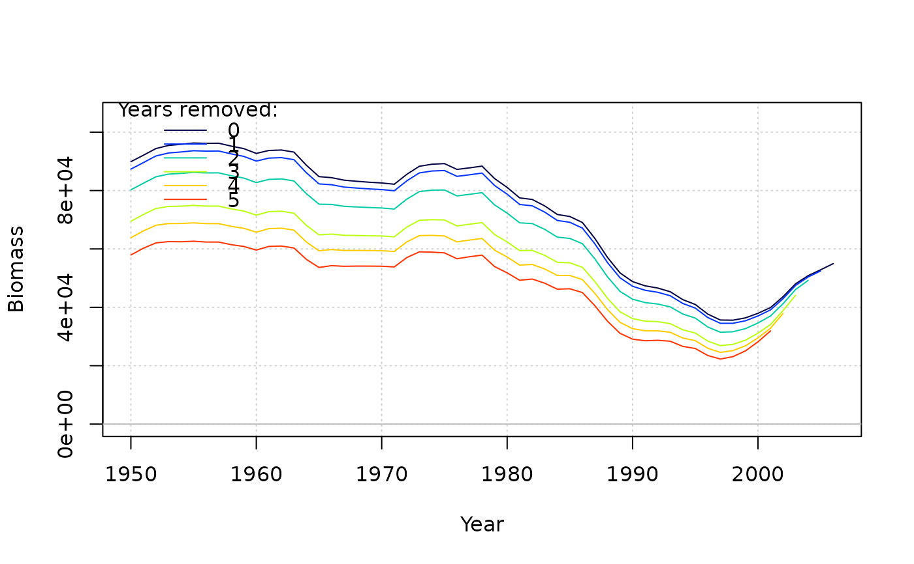
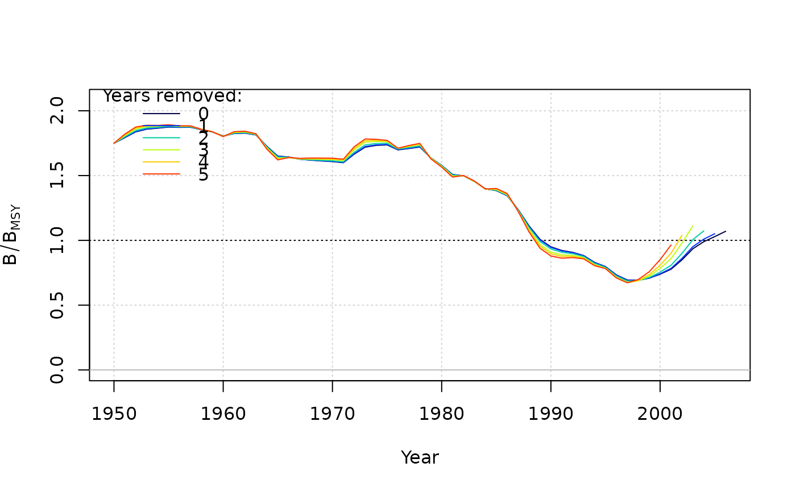

A surplus production model that uses only a time-series of catches and a relative abundance index
and coded in TMB. The base model, SP, is conditioned on catch and estimates a predicted index.
Continuous surplus production and fishing is modeled with sub-annual time steps which should approximate
the behavior of ASPIC (Prager 1994). The Fox model, SP_Fox, fixes BMSY/K = 0.37 (1/e).
The state-space version, SP_SS estimates annual deviates in biomass. An option allows for setting a
prior for the intrinsic rate of increase.
The function for the spict model (Pedersen and Berg, 2016) is available in MSEextra.
SP( x = 1, Data, AddInd = "B", rescale = "mean1", start = NULL, fix_dep = TRUE, fix_n = TRUE, LWT = NULL, n_seas = 4L, n_itF = 3L, use_r_prior = FALSE, r_reps = 100, SR_type = c("BH", "Ricker"), silent = TRUE, opt_hess = FALSE, n_restart = ifelse(opt_hess, 0, 1), control = list(iter.max = 5000, eval.max = 10000), ... ) SP_SS( x = 1, Data, AddInd = "B", rescale = "mean1", start = NULL, fix_dep = TRUE, fix_n = TRUE, fix_sigma = TRUE, fix_tau = TRUE, LWT = NULL, early_dev = c("all", "index"), n_seas = 4L, n_itF = 3L, use_r_prior = FALSE, r_reps = 100, SR_type = c("BH", "Ricker"), integrate = FALSE, silent = TRUE, opt_hess = FALSE, n_restart = ifelse(opt_hess, 0, 1), control = list(iter.max = 5000, eval.max = 10000), inner.control = list(), ... ) SP_Fox(x = 1, Data, ...)
Arguments
| x | An index for the objects in |
|---|---|
| Data | An object of class Data. |
| AddInd | A vector of integers or character strings indicating the indices to be used in the model. Integers assign the index to the corresponding index in Data@AddInd, "B" (or 0) represents total biomass in Data@Ind, "VB" represents vulnerable biomass in Data@VInd, and "SSB" represents spawning stock biomass in Data@SpInd. |
| rescale | A multiplicative factor that rescales the catch in the assessment model, which
can improve convergence. By default, |
| start | Optional list of starting values. Entries can be expressions that are evaluated in the function. See details. |
| fix_dep | Logical, whether to fix the initial depletion (ratio of biomass to carrying capacity in the
first year of the model). If |
| fix_n | Logical, whether to fix the exponent of the production function. If |
| LWT | A vector of likelihood weights for each survey. |
| n_seas | Integer, the number of seasons in the model for calculating continuous surplus production. |
| n_itF | Integer, the number of iterations to solve F conditional on the observed catch given multiple seasons within an annual time step.
Ignored if |
| use_r_prior | Logical, whether a prior for the intrinsic rate of increase will be used in the model. See details. |
| r_reps | If |
| SR_type | If |
| silent | Logical, passed to |
| opt_hess | Logical, whether the hessian function will be passed to |
| n_restart | The number of restarts (calls to |
| control | A named list of parameters regarding optimization to be passed to
|
| ... | For |
| fix_sigma | Logical, whether the standard deviation of the index is fixed. If |
| fix_tau | Logical, the standard deviation of the biomass deviations is fixed. If |
| early_dev | Character string describing the years for which biomass deviations are estimated in |
| integrate | Logical, whether the likelihood of the model integrates over the likelihood of the biomass deviations (thus, treating it as a state-space variable). |
| inner.control | A named list of arguments for optimization of the random effects, which
is passed on to newton via |
Value
An object of Assessment containing objects and output from TMB.
Details
For start (optional), a named list of starting values of estimates can be provided for:
MSYMaximum sustainable yield.. Otherwise, 300% of mean catch by default.FMSYSteepness. Otherwise, Data@Mort[x] or 0.2 is used.depInitial depletion (B/B0) in the first year of the model. By default, 1.nThe production function exponent that determines BMSY/B0. By default, 2 so that BMSY/B0 = 0.5.sigmaLognormal SD of the index (observation error). By default, 0.05. Not used with multiple indices.tauLognormal SD of the biomass deviations (process error) inSP_SS. By default, 0.1.
Multiple indices are supported in the model.
If use_r_prior = TRUE, SP and SP_SS will use a prior for the intrinsic rate of increase in the objective function.
A vector of length two can be passed in the start list for the mean and standard deviation of the prior (see example). The normal
distribution is used.
If no values are provided, a prior is created using the Euler-Lotka method (Equation 15a of McAllister et al. 2001).
The Euler-Lotka method is modified to multiply the left-hand side of equation 15a by the alpha parameter of the
stock-recruit relationship (Stanley et al. 2009). Natural mortality and steepness are sampled in order to generate
a prior distribution for r. See vignette("Surplus_production") for more details.
Note
The model uses the Fletcher (1978) formulation and is parameterized with FMSY and MSY as leading parameters. The default conditions assume unfished conditions in the first year of the time series and a symmetric production function (n = 2).
Tip: to create the Fox model (Fox 1970), just fix n = 1. See example.
Required Data
SP: Cat, IndSP_SS: Cat, Ind
Optional Data
SP_SS: CV_Ind
References
Fletcher, R. I. 1978. On the restructuring of the Pella-Tomlinson system. Fishery Bulletin 76:515:521.
Fox, W.W. 1970. An exponential surplus-yield model for optimizing exploited fish populations. Transactions of the American Fisheries Society 99:80-88.
McAllister, M.K., Pikitch, E.K., and Babcock, E.A. 2001. Using demographic methods to construct Bayesian priors for the intrinsic rate of increase in the Schaefer model and implications for stock rebuilding. Can. J. Fish. Aquat. Sci. 58: 1871-1890.
Pedersen, M. W. and Berg, C. W. 2017. A stochastic surplus production model in continuous time. Fish and Fisheries. 18:226-243.
Pella, J. J. and Tomlinson, P. K. 1969. A generalized stock production model. Inter-Am. Trop. Tuna Comm., Bull. 13:419-496.
Prager, M. H. 1994. A suite of extensions to a nonequilibrium surplus-production model. Fishery Bulletin 92:374-389.
Stanley, R.D., M. McAllister, P. Starr and N. Olsen. 2009. Stock assessment for bocaccio (Sebastes paucispinis) in British Columbia waters. DFO Can. Sci. Advis. Sec. Res. Doc. 2009/055. xiv + 200 p.
See also
Author
Q. Huynh
Examples
data(swordfish) #### Observation-error surplus production model res <- SP(Data = swordfish) # Provide starting values, assume B/K = 0.875 in first year of model # and symmetrical production curve (n = 2) start <- list(dep = 0.875, n = 2) res <- SP(Data = swordfish, start = start) # \donttest{ plot(res)#>#>#>#> An object of class "prof" #> Slot "Model": #> [1] "SP" #> #> Slot "Name": #> [1] "North Atlantic Swordfish (Source: ASPIC software)" #> #> Slot "Par": #> [1] "FMSY" #> #> Slot "MLE": #> [1] 0.2779916 #> #> Slot "grid": #> FMSY MSY nll #> 1 0.10 14279.16 3.2294940699 #> 2 0.11 14279.16 2.8709621889 #> 3 0.12 14279.16 2.5306098844 #> 4 0.13 14279.16 2.2099100337 #> 5 0.14 14279.16 1.9099783048 #> 6 0.15 14279.16 1.6316339875 #> 7 0.16 14279.16 1.3754432106 #> 8 0.17 14279.16 1.1417518078 #> 9 0.18 14279.16 0.9307119587 #> 10 0.19 14279.16 0.7423048923 #> 11 0.20 14279.16 0.5763609104 #> 12 0.21 14279.16 0.4325774337 #> 13 0.22 14279.16 0.3105354898 #> 14 0.23 14279.16 0.2097149079 #> 15 0.24 14279.16 0.1295084067 #> 16 0.25 14279.16 0.0692347101 #> 17 0.26 14279.16 0.0281507868 #> 18 0.27 14279.16 0.0054632851 #> 19 0.28 14279.16 0.0003392047 #> 20 0.29 14279.16 0.0119158312 #> 21 0.30 14279.16 0.0393099433 #> 22 0.31 14279.16 0.0816262912 #> 23 0.32 14279.16 0.1379653440 #> 24 0.33 14279.16 0.2074302985 #> 25 0.34 14279.16 0.2891333485 #> 26 0.35 14279.16 0.3822012176 #> 27 0.36 14279.16 0.4857799664 #> 28 0.37 14279.16 0.5990390917 #> 29 0.38 14279.16 0.7211749445 #> 30 0.39 14279.16 0.8514134997 #> 31 0.40 14279.16 0.9890125181 #>#> Mohn's rho #> Fishing mortality 0.129 #> F/F[MSY] -0.145 #> Biomass -0.091 #> B/B[MSY] 0.152 #> B/B[0] 0.152# } #### State-space version res_SS <- SP_SS(Data = swordfish, start = list(dep = 0.875, sigma = 0.1, tau = 0.1)) # \donttest{ plot(res_SS)#>#>#># } #### Fox model res_Fox <- SP(Data = swordfish, start = list(n = 1), fix_n = TRUE) res_Fox2 <- SP_Fox(Data = swordfish) #### SP with r_prior res_prior <- SP(Data = SimulatedData, use_r_prior = TRUE) #### Pass an r_prior to the model with mean = 0.35, sd = 0.10 res_prior2 <- SP(Data = SimulatedData, use_r_prior = TRUE, start = list(r_prior = c(0.35, 0.10)))